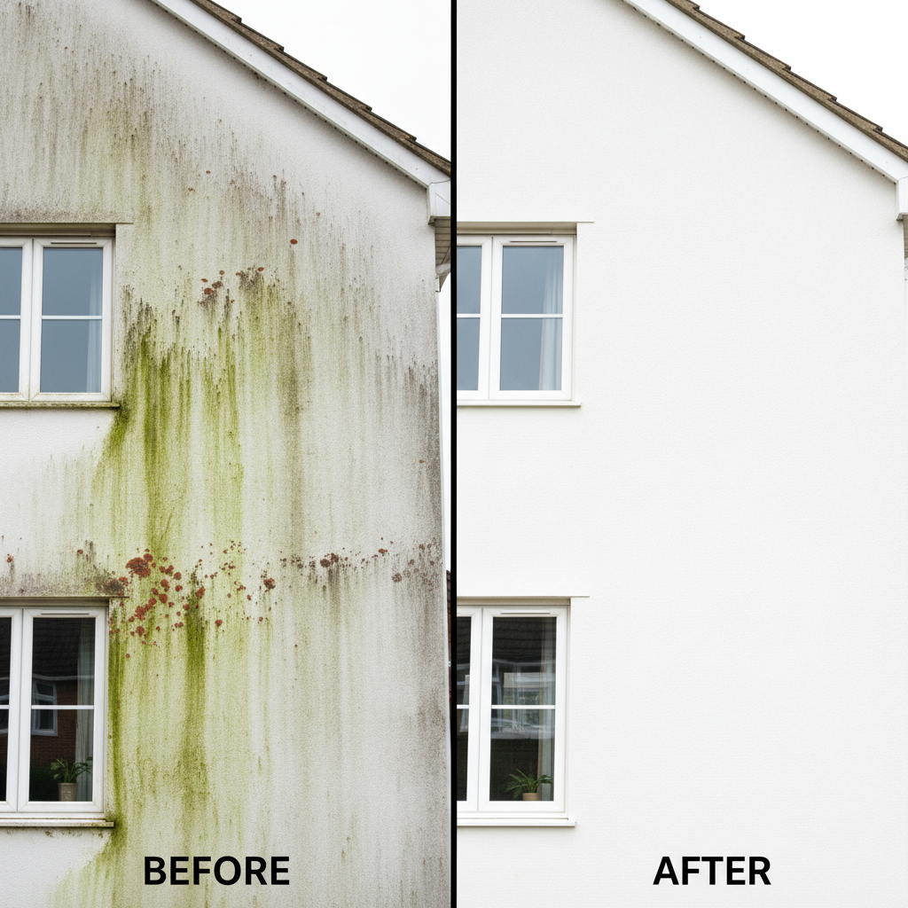

Expert Render Cleaning & Soft Washing
Rendered walls are prone to green algae growth and black staining, especially in Surrey's damp climate. Our professional render cleaning service uses soft washing techniques to safely remove all organic growth without damaging your render or forcing water into your walls.
Unlike high-pressure washing (which can damage render), soft washing uses low pressure combined with specialist cleaning solutions to kill algae, moss, and bacteria at the root. This provides longer-lasting results and protects your property.
What is Soft Washing?
Soft washing is a gentle cleaning method specifically designed for delicate surfaces like render, painted walls, and building facades. We use:
- Low Pressure Application - 10-20% of standard pressure washing force
- Specialist Biocides - Kill algae, moss, and lichen at root level
- Longer-Lasting Results - Treats the cause, not just the symptoms
- Safe for Render - No risk of damage or water ingress
See the Difference
A typical render transformation in Surrey
Render Types We Clean
- K-Rend and modern acrylic renders
- Traditional sand and cement render
- Pebbledash and roughcast
- Painted render
- Monocouche render
Common Render Problems
Green Algae Growth
The most common issue in Surrey. Green algae (Gloeocapsa magma) thrives on north-facing and shaded walls, creating unsightly green or black streaks.
Black Staining
Dark streaks caused by algae, pollution, and organic matter. Particularly noticeable on white or light-coloured renders.
Red Algae
Less common but creates distinctive red/pink staining on render surfaces.
Our Render Cleaning Process
1. Inspection
We assess render condition, identify problem areas, and check for any existing damage.
2. Protection
Windows, doors, and landscaping are protected before treatment begins.
3. Biocide Application
Specialist cleaning solution is applied at low pressure to kill organic growth.
4. Dwell Time
Solution works for 15-30 minutes to penetrate and kill growth at root level.
5. Gentle Rinse
Low-pressure rinse removes dead growth and reveals clean render.
Service Areas
We provide render cleaning throughout Redhill, Reigate, Horley, Dorking and all Surrey. View all areas
Get Your Free Render Cleaning Quote
Every property is different - size, render type, condition, and the extent of algae growth all affect the final price. That's why we provide free, no-obligation quotes tailored to your specific property.
With our 2-hour callback guarantee, you won't be left waiting. Submit a quote request and we'll call you within 2 hours during business hours (Mon-Sat 8am-6pm) to discuss your requirements and provide accurate pricing. Request your free quote now.